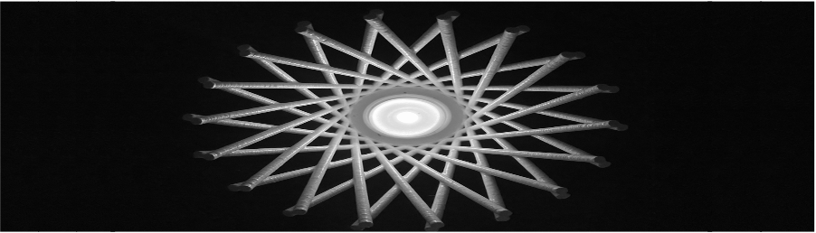

Manufacturing by software
Class taught by Professor Hod Lipson
Generative Design
Creating physical objects directly from a software blueprint.
Lampshade Lattice
The goal of this project was to perform generative design for 3D printing: design and print a lamp shade made entirely of a 3D printed lattice. The lampshade needed to accomodate a LED tea-light, and be stable on a flat surface. I wrote a program on OpenSCAD that generated geometry procedurally. Then exported its STL file, imported it on a 3D printer slicer and 3D printed a model.
Check THIS video out!
Steps and Algorithm Description
Design A
Design A was coded in Python using the Openpyscad library. A sphere with a wall thickness of 3mm was created by extruding a sphere with radius of 52 mm and removing one with a radius of 49 mm. To create a flat surface and a clean cut to the wall of the model, a sphere (y) was removed in a negative translation along the z axis of 25 mm. To create the base the tea-light holder along the sphere cut, a base cylinder with height 2 mm and radius 43 mm and a one of height 10 mm and radius 22 mm were extruded. A third cylinder with height 11 mm (to assure a clean cut on OpenSCAD) and radius of 20 mm was removed.The holes on the sphere were created with 2 for loops controlling the angles θ (o) and φ (q) and translation along the sphere using the spherical Caertesian coordinates listed below.
x=r sinθ cosφ
x=r sinθ sinφ
x=r cosθ
These were then removed from the sphere. A final cylinder was removed to create the top hole that allows a better visual of the inside of the design. Number of elements: 572.
The initial design of Model A had originally a support system at the base of the sphere generated by the following code by introducing a cubic hollow line at the translation coordinates of x= -43.5, y=5 and z=1.5 and then add a 2 set of cylinders with a x rotation of ~45° and y rotation of 25° by the means of a loop around the sphere:
c7=ops.Cube([5,5,5]).translate([-43,5,1.5])
u= ops.Union()
for i in range (180):
c8=c7.rotate([0,0,2*i])
u.append(c8)
c9=ops.Cylinder(h=7*math.sqrt(2),r=0.6).rotate([45,25,0]).translate([39.5,0,1])
c10=ops.Cylinder(h=7*math.sqrt(2),r=0.6).rotate([-45,25,0]).translate([39.5,0,1])
c11=c9+c10
d=ops.Union()
for i in range (20):
c12=c11.rotate([0,0,18*i])
d.append(c12)
Design B
Design B was coded on OpenSCAD. The base was coded to have a flat surface by generating a cylinder and then adding rounded sides by creating a 2D circle and then rotating to create torus-shaped sides. In order to fit a teacup, light a cylinder extrusion was removed from one with a bigger radius. 2 for loops were used to create the walls of the design, using a positive and negative rotation to create the rhombus grid: the cylinders were created using a linear extrusion of a circle with radius of 2 mm. Number of elements :42.